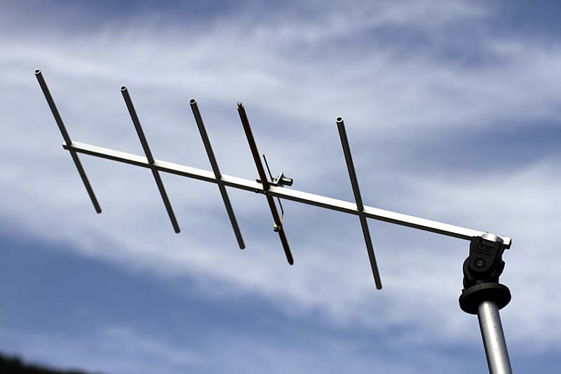
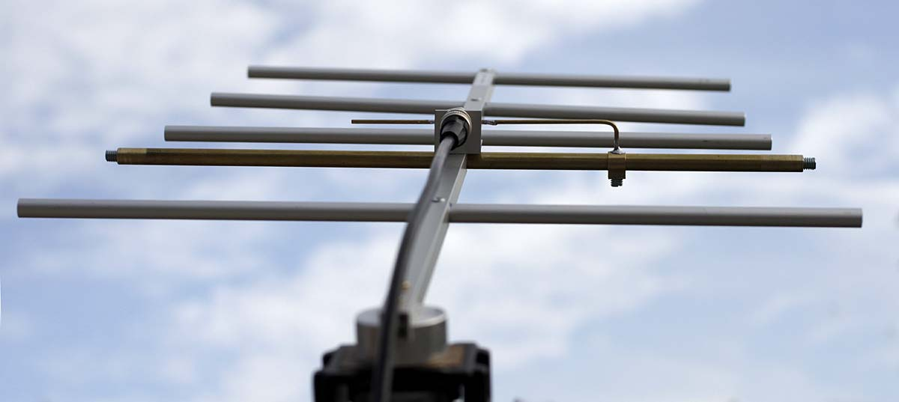
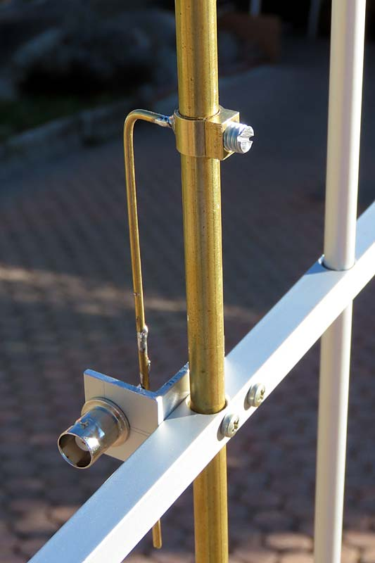
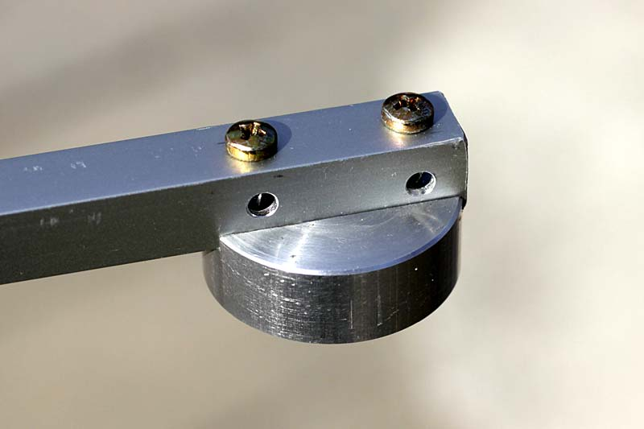

Radio & antenne
Chirio Yagi PMR antenna 3, 5, 7 elementi
Antenna direttiva a banda stretta con basso swr
Gennaio 2021
Antenna RTX adatta per le frequenze PMR da 446.000 a 446.100 MHz, i PMR omologati hanno l'antennino fisso e poco si può fare per collegare una antenna esterna, ma chi ha radio tipo Icom, Yaesu o Baofeng con uscita a connettore è possibile collegare una antenna esterna con ovvi vantaggi per aumentare le distanze di collegamento, che per le frequenze di 70cm sono solo ottiche, cioè l'antenna ricevente e viceversa devono essere in vista ottica tra di loro, poco o niente si trae vantaggio dalla riflessione, come avviene invece sui 2m.

Antenna tipo Yagi, direttiva per le frequenze 446 MHz, realizzata per dare il massimo rendimento sulle frequenze PMR, disponibile a 3 oppure 5 elementi, oppure realizzazioni speciali a richiesta fino a 20 elementi.
Il Gamma-match è regolabile per trovare il migliore adattamento SWR.
Come pure possibile la regolazione fine del dipolo per centrare la frequenza. L'antenna viene fornita già tarata a centro gamma PMR e relativo diagramma stampato del SWR ottenuto.

- Agli estremi del dipolo si notano le viti per la taratura fine della frequenza di risonanza, su richiesta l'antenna può essere fornita su altre frequenze nel campo dei 70cm da 430 a 450 MHz sempre con SWR molto basso.
- Si nota molto bene il gamma match con il morsetto a vite, il centrale è direttamente saldato a stagno sulla terminazione BNC per facilitare la eventuale taratura.

Caratteristiche
- Frequenza lavoro 446.00-446.100 MHz ROS migliore del 1.1:1
- Banda passante ROS 2:1 da 445 a 447 MHz
- Impedenza uscita è di 50 ohm uscita BNC-F.
- Potenza applicabile 20W, max 50W
- Peso 200g (5 elementi) 150g (3 elementi)
- Dimensioni 70cm x 33cm (5 elementi)
{kind=link}
| Chirio Yagi PMR 7 elementi 9.8dB guadagno | ||
|---|---|---|
| - La Chirio Yagi PMR 7 elementi si può usare singolarmente oppure è disponibile kit per accoppiare due antenne uguali cosi da aumentare sia il guadagno che la massima potenza applicabile. | ||
{kind=link}
{kind=link}
{kind=link}
Consigli per usare la Chirio Yagi PMR
- Antenna adatta per uso portatile esterno, va anche bene fissarla in verticale su un cavalletto foto, oppure in posizione fissa su palo.
- La Chirio Yagi PMR è molto leggera, quindi ideale per uso campale, adatta quindi per ricerca segnale, tipo caccia alla volpe o per emergenza ricerca dispersi.
- Il cavo di collegamento è bene che sia almeno un RG58 di buona qualità per avere le perdite al minimo, meglio un cavo con isolamento Teflon, inoltre la lunghezza del cavo coassiale va determinata e tagliata per la frequenza di lavoro. (Eventualmente posso fornire cavo tagliato e intestato della giusta misura per avere SWR più basso possibile)
- Su richiesta anche modello per 430 MHz banda Radioamatori.

- Il robusto fissaggio per il cavalletto foto, con doppia foratura verticale e orizzontale.
© Roberto Chirio: all rights reserved.